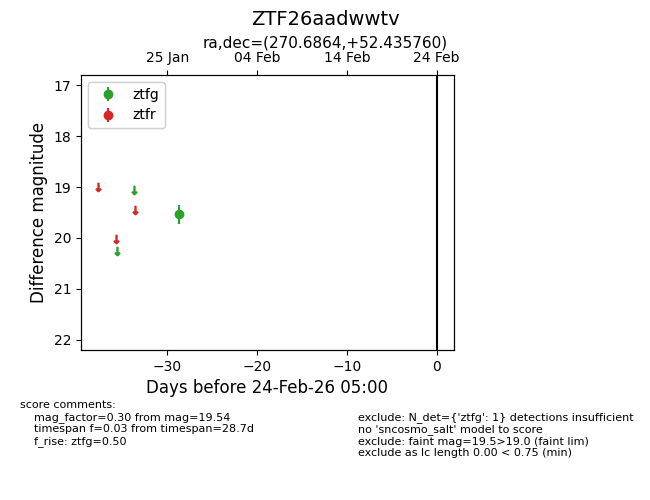
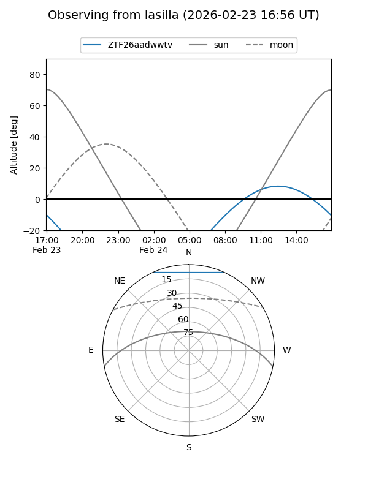
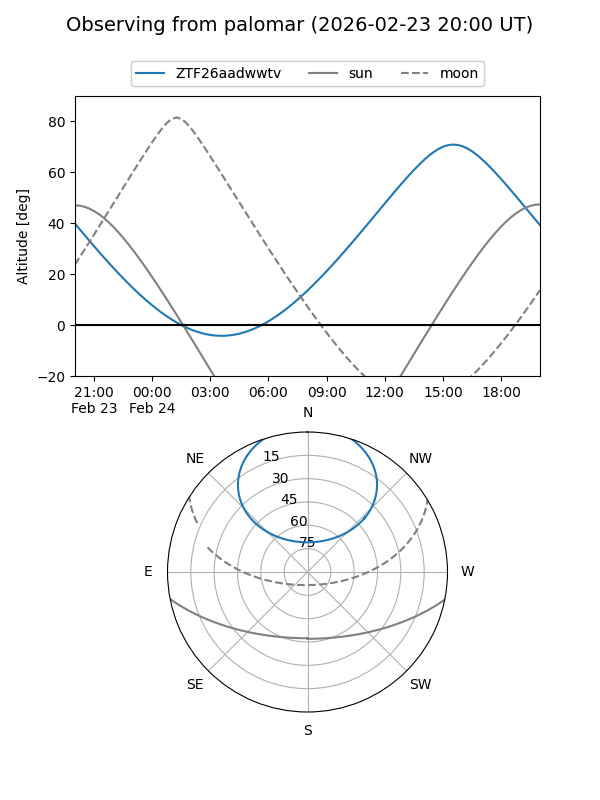

ZTF26aadwwtv
Target ZTF26aadwwtv at 2026-01-26 14:36
Aliases and brokers:
FINK: link
Lasair: link
ALeRCE: link
alt names
ZTF26aadwwtv (ztf,fink_ztf)
Coordinates:
equatorial (ra, dec) = 270.6864,+52.43576
equatorial (HMS+DMS) = 18:02:44.73,+52:26:08.74
galactic (l, b) = (80.2775,+28.41516)
Flags:
Photometry:
last ztfg=19.54
1 ztfg detections
Lightcurve

Visibility


Additional plots